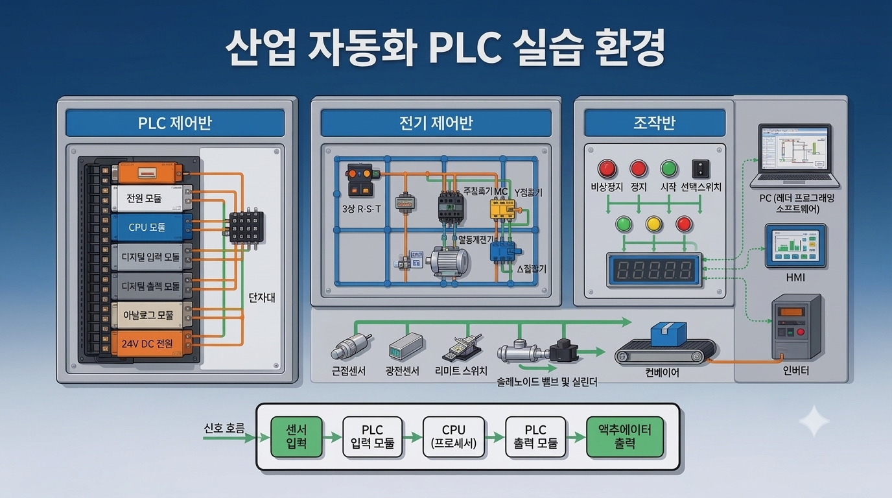

산업 자동화 PLC 실습 환경 (클릭하면 원본 이미지 보기)
오늘의 학습 목표
- PLC의 역할을 입력·프로그램·출력으로 설명할 수 있다.
- 센서·액추에이터·HMI와 PLC의 관계를 구분한다.
- 디지털·아날로그와 주기적 스캔의 개념을 이해한다.
- AND·OR·NOT의 결과를 예측하고 가상 버튼으로 확인한다.
- 내부 태그 실습과 실제 장치 조작의 안전 경계를 구분한다.
대상: PLC 입문자 / 선수학습 없음 / 준비물: 웹 브라우저와 기록 도구 / 실제 PLC·설치 프로그램 없이 학습 가능
PLC란? — 입력을 읽고 조건에 따라 출력을 결정
PLC는 Programmable Logic Controller의 약자로, 프로그램에 따라 기계나 공정의 동작을 제어하는 산업용 제어 장치입니다. 스위치·센서의 상태를 읽고, 미리 작성한 조건과 순서에 따라 표시등·밸브·구동 장치에 보낼 명령을 결정합니다.
예를 들어 “제품이 감지되고 운전 허가가 있으면 표시등을 켠다”는 요구를 프로그램으로 만들 수 있습니다. PLC는 센서 자체도 모터 자체도 아니라, 정보를 받아 동작 명령을 계산하는 제어 장치입니다.
① 무엇을 읽는가? → 입력
② 어떤 조건으로 결정하는가? → 프로그램
③ 무엇에 명령하는가? → 출력
산업 자동화의 구조 — 현장·제어·운영
자동화는 단순히 모터를 계속 돌리는 것이 아니라, 공정의 상태를 감지하고 조건과 순서에 따라 동작을 제어하는 일입니다. 다음은 역할을 이해하기 위한 개념적 구분입니다. 실제 시스템에서는 여러 기능이 한 장치에 통합될 수 있습니다.
| 역할 | 대표 요소 | 무엇을 하는가? |
|---|---|---|
| 현장 감지 | 센서·버튼·스위치 | 제품·위치·온도·조작 요청을 전달 |
| 제어 | PLC | 조건 판단·순서·시간·수량 처리 |
| 현장 동작 | 밸브·모터 구동 장치·표시등 | 명령에 따라 동작하거나 상태 표시 |
| 운영·감시 | HMI·감시 시스템 | 조작 화면·상태·경보·설정 표시 |
| 생산 정보 | 상위 생산 관리 시스템 | 실적·이력·생산 계획 등과 연계 |
HMI에서 “운전” 버튼을 눌렀다는 사실과 실제 모터가 회전한다는 사실은 다릅니다. PLC의 실행 조건, 구동 장치의 준비 상태와 실제 피드백을 함께 확인해야 합니다.
입력·출력 구분 — PLC를 기준으로 보기
| 대상 | 분류 | 이유 |
|---|---|---|
| 시작 버튼 | 입력 | 버튼 상태가 PLC로 들어옴 |
| 제품 감지 센서 | 입력 | 제품 유무 정보가 PLC로 들어옴 |
| 온도 측정값 | 입력 | 공정의 측정 정보가 PLC로 들어옴 |
| 운전 표시등 명령 | 출력 | PLC가 표시등의 명령을 결정 |
| 밸브 구동 명령 | 출력 | PLC가 밸브 인터페이스로 명령 전달 |
| 드라이브 실속도 | 입력 정보 | 구동 장치가 실제 상태를 PLC에 전달 |
같은 장치에도 입력과 출력이 있을 수 있습니다
인버터에는 PLC가 보내는 운전·속도 명령과 PLC가 받는 준비·고장·실속도 정보가 함께 존재할 수 있습니다. 장치 이름만 보고 입출력을 하나로 정하지 말고 신호의 방향을 봅니다.
디지털과 아날로그 — 상태와 연속값
| 구분 | 표현 | 예시 |
|---|---|---|
| 디지털 | 두 상태를 0/1 또는 FALSE/TRUE로 표현 | 버튼 눌림, 제품 감지, 표시 명령 |
| 아날로그 | 일정 범위의 연속적인 물리량을 수치화 | 온도, 압력, 유량, 속도 지령 |
디지털 입력의 TRUE가 실제로 무엇을 뜻하는지는 배선·센서 특성·논리 약속에 따라 정합니다. TRUE가 항상 “버튼 눌림” 또는 “안전”을 의미하지 않습니다.
아날로그 측정은 전기 신호를 숫자로 변환한 후 공학 단위로 환산할 수 있습니다. 예를 들어 원시 숫자를 °C로 바꾸려면 모듈과 센서의 범위를 알아야 합니다. 구체적인 배선과 스케일은 3주차 이후에 다룹니다.
PLC 기본 구성 — 전원·CPU·I/O·통신
| 구성 요소 | 역할 |
|---|---|
| 전원 계통 | CPU와 현장 장치에 필요한 전원 공급 |
| CPU | 프로그램 실행·메모리·진단·통신 처리 |
| 입력 모듈 | 현장 신호를 제어 프로그램이 읽는 정보로 변환 |
| 출력 모듈 | 계산된 결과를 외부 인터페이스로 전달 |
| 통신 인터페이스 | HMI·다른 PLC·드라이브·분산 I/O 등과 연결 |
| 엔지니어링 PC | 프로젝트 작성·컴파일·전송·진단 |
CPU에 I/O가 내장된 컴팩트 형태와 모듈을 조합하는 형태가 있습니다. 같은 제품군 안에서도 전원·출력 방식·지원 모듈이 달라지므로 실제 장치의 주문번호와 매뉴얼을 확인합니다.
스캔 사이클 — 반복해서 관찰하고 계산하기
PLC의 대표적인 처리 방식은 주기적 실행입니다. 입문 단계에서는 아래 흐름으로 이해합니다. 일반적인 프로세스 이미지 기반 프로그램은 CPU 메모리에 저장된 입력 상태를 사용해 계산하고 출력 결과를 기록합니다.
프로세스 이미지(Process image)는 실제 I/O 상태와 프로그램 사이에서 사용하는 메모리상의 정보입니다. 프로그램이 입력을 읽는 매 순간에 센서를 직접 새로 읽는다고 생각하면 오해가 생길 수 있습니다.
| 용어 | 의미 |
|---|---|
| 스캔/사이클 | 주기적으로 반복되는 처리 흐름 |
| 사이클 시간 | 한 주기 처리에 걸리는 시간 |
| 입력 프로세스 이미지 | 프로그램이 참조하는 입력 상태의 메모리 표현 |
| 출력 프로세스 이미지 | 프로그램이 계산한 출력 결과의 메모리 표현 |
센서 펄스가 너무 짧으면 스캔 사이에서 놓칠 수 있습니다. 사이클 시간만이 아니라 입력 필터·모듈·통신 주기·출력 장치 응답까지 전체 지연에 영향을 줍니다.
기본 논리 — AND · OR · NOT
프로그램의 첫 출발은 조건을 분명하게 표현하는 것입니다. 아래 예제의 A·B는 실제 안전 입력이 아니라 가상 Bool 값입니다.
| 연산 | 뜻 | 예시 |
|---|---|---|
| AND | 두 조건이 모두 TRUE | 제품 감지 AND 실행 허가 |
| OR | 하나 이상 TRUE | 버튼 A OR 버튼 B |
| NOT | 참·거짓 반전 | NOT 가상 고장 상태 |
| A | B | A AND B | A OR B |
|---|---|---|---|
| FALSE | FALSE | FALSE | FALSE |
| FALSE | TRUE | FALSE | TRUE |
| TRUE | FALSE | FALSE | TRUE |
| TRUE | TRUE | TRUE | TRUE |
// 문자 기반 표현의 미리보기: 나중에 SCL에서 학습
Lamp := ProductDetected AND Enable;버튼으로 해 보는 가상 논리 실습
A·B를 전환하고 결과를 예측해 보세요. 모든 계산은 이 브라우저 안에서만 이루어지며 PLC·네트워크·실제 I/O에 접근하지 않습니다.
이 실습은 조합 논리만 보여 줍니다. PLC 스캔·시간 지연·자기유지·고장·안전 기능을 시뮬레이션하지 않습니다.
관찰 순서
- AND에서 A만 TRUE로 바꿔 결과를 확인합니다.
- B도 TRUE로 바꾸어 두 조건이 필요함을 확인합니다.
- OR로 바꾸고 하나만 TRUE인 경우를 확인합니다.
- NOT A에서는 B가 결과에 영향을 주지 않음을 확인합니다.
- 초기화 후 진리표의 네 조합을 기록합니다.
자기유지와 순서 제어 — 첫 주에는 개념만
앞선 램프 논리는 입력이 바뀌면 바로 결과가 바뀌는 조합 논리입니다. 반면 시작 버튼을 놓아도 운전 요청을 유지하려면 상태 기억이 필요합니다. 이를 단순 버튼 AND 논리와 구분합니다.
| 유형 | 예시 | 필요한 개념 |
|---|---|---|
| 조합 논리 | 두 입력이 모두 TRUE면 램프 ON | 현재 입력의 논리 조합 |
| 상태 기억 | 시작 후 정지 요청까지 운전 유지 | 메모리·우선순위·초기화 |
| 순서 제어 | 이송 → 위치 확인 → 검사 → 완료 | 단계·전이 조건·상태 |
| 시간·계수 | 2초 기다림, 제품 10개 확인 | 타이머·카운터·에지 |
11주차부터는 상태를 보관하는 FB와 타이머를 이용해 정상 동작뿐 아니라 정지·고장·복귀까지 함께 설계합니다.
요구사항을 제어 로직으로 바꾸는 절차
- 입력과 출력을 PLC 기준으로 목록화합니다.
- 각 신호의 TRUE/FALSE 의미와 아날로그 단위를 정의합니다.
- 정상 동작 조건과 정지·예외 조건을 분리합니다.
- 동시 요청이 있을 때 우선순위를 정합니다.
- 논리·상태·순서·시간·계수 중 무엇이 필요한지 고릅니다.
- 예상 결과를 먼저 표로 작성하고 가상 입력으로 확인합니다.
사례: 가상 제품 감지 표시등
| 항목 | 정의 |
|---|---|
| 입력 ProductDetected | TRUE이면 제품 감지 |
| 입력 Enable | TRUE이면 표시 허가 |
| 출력 Lamp | 두 조건이 모두 TRUE일 때 ON |
| 상태 기억 | 사용하지 않음 |
| 시험 | 네 가지 입력 조합과 출력 비교 |
단순 예제도 “표시 허가가 없어졌을 때 즉시 OFF인가?”처럼 조건을 명확하게 적는 습관이 중요합니다. 실제 고장 표시와 안전 표시에는 별도의 요구사항이 필요합니다.
프로그래밍 언어와 도구의 역할
| 명칭 | 이해할 역할 |
|---|---|
| LD/LAD | 접점·코일 형태로 논리 표현 |
| FBD | 기능 블록을 연결해 논리·연산 표현 |
| ST/SCL | 문자 기반 구조화 언어, SCL은 Siemens의 명칭 |
| SFC/GRAPH | 단계·전이로 순서 표현, GRAPH는 Siemens 도구 |
| TIA Portal / STEP 7 | 프로젝트·하드웨어·프로그램·진단을 다루는 환경 |
언어의 표준 개념과 특정 제조사 도구의 지원 범위는 다릅니다. 모든 CPU가 모든 언어를 지원한다고 가정하지 않습니다. 4주차에서 언어 개요, 5~8주차에서 각 표현을 학습합니다.
안전한 학습 — 할 수 있는 것과 하지 않는 것
| 이번 수업에서 하는 일 | 이번 수업에서 하지 않는 일 |
|---|---|
| 교안·명판 사진·데이터시트 관찰 | 전원 켜진 제어반 내부 접촉 |
| 내부 태그로 논리 결과 확인 | 실제 출력 강제·모터 기동 |
| 입출력·단위·진리표 작성 | 보호 회로·안전 인터록 우회 |
| 지원되는 시뮬레이터의 가상 시험 | 생산 PLC의 무단 다운로드·STOP/RUN 전환 |
표시등이 꺼졌거나 PLC가 STOP이라는 이유만으로 장치에 위험 에너지가 없다고 판단하지 않습니다. 정비·배선은 권한을 가진 담당자의 에너지 차단·확인 절차가 필요한 별도 작업입니다.
첫 주 실습 기록과 관찰 과제
실습 기록지
이름 / 학습일: ____________________
선택한 가상 장치: ____________________
입력 두 가지 / 각각 TRUE의 의미: ____________________
출력 한 가지 / ON 조건: ____________________
기억·시간·순서가 필요한가?: ____________________
| A | B | AND 예상/관찰 | OR 예상/관찰 |
|---|---|---|---|
| FALSE | FALSE | ____ / ____ | ____ / ____ |
| FALSE | TRUE | ____ / ____ | ____ / ____ |
| TRUE | FALSE | ____ / ____ | ____ / ____ |
| TRUE | TRUE | ____ / ____ | ____ / ____ |
관찰 과제
- 가상의 포장 장치에서 입력 세 가지와 출력 세 가지를 적습니다.
- 그중 하나의 ON 조건을 자연어로 씁니다.
- 정지·통신 이상·전원 복귀 시 확인할 질문을 각각 하나씩 만듭니다.
- 현재 입력만으로 정해지는 동작과 이전 상태가 필요한 동작을 구분합니다.
예시는 관찰·설계 연습이며 실제 설비를 조작하거나 제어반을 열 필요가 없습니다.
확인 문제와 다음 학습
1. PLC가 하는 핵심 일을 세 단계로 말하면?
입력 정보를 읽고, 프로그램을 실행하며, 출력 명령을 결정·반영하는 일입니다.
2. 모터의 운전 명령과 실속도는 각각 입력인가요, 출력인가요?
PLC를 기준으로 운전 명령은 출력 정보, 드라이브에서 받는 실속도는 입력 정보입니다.
3. A만 TRUE이고 B는 FALSE일 때 AND와 OR 결과는?
AND는 FALSE, OR는 TRUE입니다.
4. TRUE는 언제나 안전 또는 정상인가요?
아닙니다. 신호의 배선·장치 특성·논리 약속에 따라 의미를 정의해야 합니다.
5. PLC는 입력이 바뀌는 순간 모든 변화를 반드시 감지하나요?
아닙니다. 스캔·입력 필터·I/O 갱신 등에 영향을 받으며 짧은 펄스는 놓칠 수 있습니다. 필요하면 적합한 고속 처리 기능을 검토합니다.
6. 브라우저 램프가 켜지면 실제 PLC 출력도 켜지나요?
아닙니다. 이번 실습은 브라우저 내부 계산만 하며 실제 PLC나 네트워크에 연결하지 않습니다.
다음 주: PLC 하드웨어 구조와 시스템 구성
전원·CPU·메모리·I/O·통신 모듈의 역할을 자세히 보고 컴팩트형과 모듈형 구성을 구분합니다. 이번 주의 입력–처리–출력 구조가 실제 장치 안에 어떻게 구현되는지 연결해 학습합니다.
1주차 핵심 정리
- PLC는 프로그램에 따라 입력을 처리하고 출력 명령을 결정합니다.
- 입력/출력은 PLC를 기준으로 정보 흐름을 구분합니다.
- 디지털은 두 상태, 아날로그는 연속 물리량을 수치화한 정보입니다.
- 스캔은 반복 처리이며 실제 응답에는 I/O·통신·장치 지연도 영향을 줍니다.
- 현재 입력 논리와 기억·순서·시간 동작을 구분합니다.
- 논리 실습 결과는 실제 설비 안전 검증을 대신하지 않습니다.
공식 참고 자료와 적용 범위
PLC 기초·프로세스 이미지·주기 실행 설명은 아래 Siemens 교육 자료와 시스템 설명을 참고했습니다. 일부 자료는 이전 버전으로, 정확한 CPU 실행 순서와 지원 기능은 대상 매뉴얼을 우선합니다. 진리표·관찰 과제·가상 버튼 실습은 본 교안용 구성입니다. 실제 PLC 연결·TIA Portal 컴파일·브라우저 렌더링 및 클릭 자동 시험은 수행하지 않았습니다. 파일 구조·링크·입력 조합의 논리 결과는 생성 과정에서 점검했습니다.